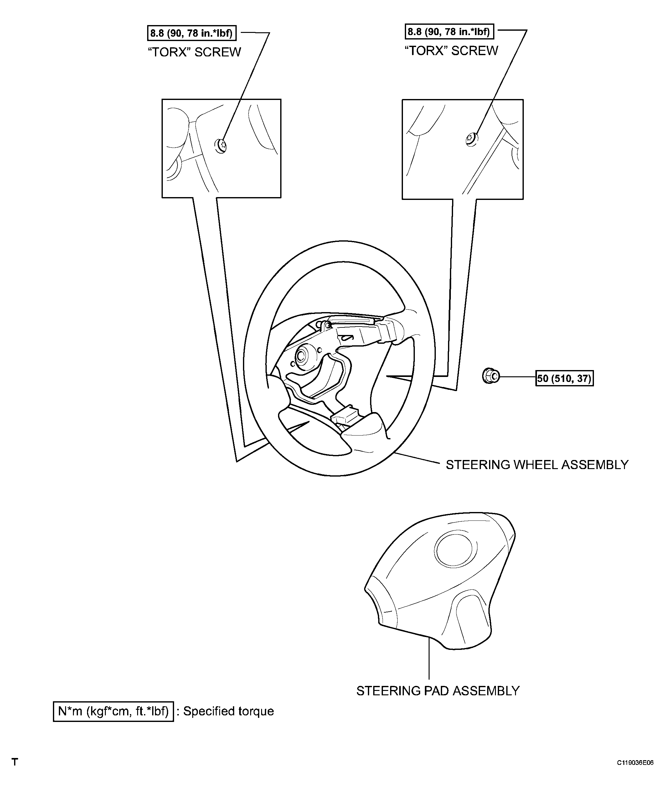

Home
>>
Scion
>>
2006
>>
xB Standard
>>
Repair and Diagnosis
>>
Restraints
>>
Air Bag, SRS
>>
Supplemental Restraint System
>>
Steering Pad
>>
Components (2005/07-2005/12)
Components (2005/07-2005/12)
Fig 1: Identifying Steering Pad Components (2005/07-2005/12)

Courtesy of © TOYOTA, LICENSE AGREEMENT TMS1002